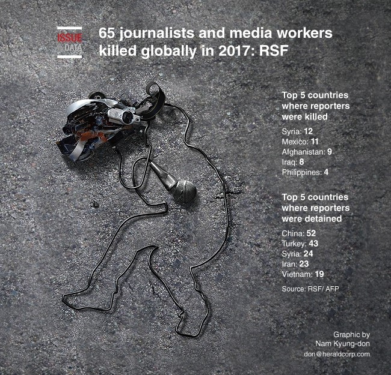

First, my apologies for the lack of Peeriblah in this report 😁 but when Mario says “March!” all we Dipchkins can do is say, “How far?” With time being of the essence, I decided to pretty much let the headlines be the story and rely on your memories (or Google searches) to fill in the blanks.
Second, two takeaways: first, Google reports that it had (as of a few days ago) a total of 1,070,000,000 results for “best of 2017 list” at press time — according to Quartz Obsession on 22 December, 2017; second, bad news still sells, even when it’s free.
Third, if you need a bit of help in organizing these stories, Wikipedia has a list of top news stories by the month.
Before looking back at the past year’s major (mostly) international dip&DIP news events let’s step back a year to December, 2016, and look at how the highly-respected, English-language, Japanese-owned, headquartered in London, newspaper “Financial Times” (FT) saw things coming in 2017. My thanx to Lionel and Gideon for allowing me to use their foresight as hindsight.
After a year of political earthquakes, 2017 is unlikely to be an easy ride.
Donald Trump’s assumption of power
Judging by his behaviour, the 45th US president will be in a hurry to make his mark. Mr Trump has promised to act quickly to pull the US out of the Trans-Pacific Partnership, revise and replace Obamacare, scrap the previous administration’s clean energy policy, and much more. The new president’s language in his inaugural address and his actions in his first few days in office will set the tone for his administration, even if Mr Trump remains his unpredictable, freewheeling self. One other ceremonial occasion will be especially keenly watched, Mr Trump’s first summit with Russian President Vladimir Putin, who US intelligence agencies suspect sought to aid the Republican’s unexpected electoral victory.
September-October: Germany’s election
Angela Merkel is under fire for her immigration policy as she steels herself for an election battle in 2017. Angela Merkel is now long established as the most important leader in Europe, if not the free world. But in 2017, as she seeks a fourth term in office, she faces a steep electoral challenge. The math of building a stable coalition is likely to be enormously complicated by the established parties’ problems. Popular frustration with Ms. Merkel’s liberal line on immigration has combined with the long-term decline of her current coalition partner, the Social Democrats, and the uncertain prospects of her traditional allies, the Free Democrats. The anti-euro, anti-immigrant Alternative for Germany will be trying to take advantage. Ms. Merkel will be seeking to ensure that her vital international role is not undermined by weakness at home.
March: UK activates Article 50
Theresa May’s government has promised to set out a plan before triggering the EU’s Article 50 divorce procedure. Nine months after the referendum that effectively scrapped half a century of British foreign and economic policy, the UK government is set to pull the trigger on the formal two-year exit process by the end of March. At present the direction of travel is not fully clear, but Theresa May’s government has promised to set out a plan before triggering the EU’s Article 50 divorce procedure. Even though that blueprint may not be detailed, the UK will also have to draw up a comprehensive negotiating strategy. Mrs. May will seek to avoid shocking the markets, while encouraging inward investment and keeping the Conservative party’s Brexiters on side. It could be difficult to pull off all three.
Iran’s presidential race
Hassan Rouhani’s success or failure will have big consequences for the Middle East and beyond. Over the past four years, despite initial expectations to the contrary, Hassan Rouhani has made his mark on Iran, notably through the country’s nuclear deal with the US and five other world powers. But Mr. Rouhani’s ability to shape the country’s agenda has come under constant attack from guardians of the old order, notably the Revolutionary Guard and members of the judiciary. Now, with the nuclear deal under strain from the arrival of Mr. Trump, who has sometimes vowed to scrap it, Mr. Rouhani faces the challenge of re-election — a vote hardliners will seek to influence. Whether he survives or not, and whether Iran takes a more confrontational path, will have big consequences for the Middle East and beyond.
Turkish elections
For almost 15 years, Recep Tayyip Erdogan has sought to expand his power in Turkey and in so doing has become the most influential leader since Mustafa Kemal Ataturk, the country’s modern founder. In 2017, Mr. Erdogan could finally achieve his central ambition: his formal ascension to the post of executive president, ruling the country as the undisputed head of both state and government. After a bloody year that included both a coup attempt and a series of terrorist attacks, popular support for giving Mr. Erdogan more power has grown. A referendum could take place in April or May. The president is likely to depict a Yes vote as empowering the will of the people. His opponents will argue that a No is the last chance to prevent a dictatorship.
Autumn: China’s Communist party congress
Not for centuries has China been as powerful on the world stage as it is today. Not since Mao Zedong has the country had a leader as powerful as Xi Jinping. Mr. Xi will be looking to consolidate that power at the 19th party congress. He is almost certain to carry on as the ruling communist party’s general secretary until 2022, but the real question is what other appointments will be made, and whether they will extend his influence by elevating his allies. If the congress brushes aside existing age and term limits, it may be a signal that Mr. Xi himself will seek to run the party past his own tentative 2022 retirement date; a further break with the past for this most ambitious Chinese leader. Meanwhile, China will have to navigate other major challenges, including the slowest growing economy for a quarter of a century and a possible rise in tensions with Mr. Trump.
April-May: French presidential elections
François Fillon of the conservative Republicans is currently the favourite to win the French presidential race. After Brexit, the election of Donald Trump and the referendum No vote that ended Matteo Renzi’s tenure as Italian prime minister comes the high-stakes election of 2017. France’s political establishment will be seeking to resist the rise of Marine Le Pen, the National Front’s presidential candidate. Although she could win the initial round of voting, Ms Le Pen is widely expected to be beaten into second place in the run-off as moderate voters rally against her. The favourite is François Fillon of the conservative Republicans. But there are divisions among the mainstream parties and Ms. Le Pen has tapped a rich seam of support among working-class voters. Moreover, the electoral shocks of 2016 show that no vote can be taken for granted. Should she somehow prevail, the EU would face potentially its biggest crisis to date, eclipsing even Brexit.
First half of the year: The fight for Raqqa
After terrifying much of the world with their territorial gains in Syria and Iraq, the jihadis of Isis have been losing ground in both countries for almost two years. Recent months have been consumed by the battle for control of Mosul, Iraq’s second city, which the extremists captured in 2014. Depending on the progress of that fight, the next push, possibly in early 2017, will be for Isis’ de facto capital of Raqqa, in Syria. The key challenge for Mr Trump’s US administration will be to forge a coalition of Syrian forces, both Kurds and Arabs, that is both able to prise Isis from its stronghold and govern effectively in the aftermath of the jihadis’ brutal rule.
The Associated Press, or AP as it is commonly known, is one of the world’s major sources of generic news reporting. Hundreds of millions of people read its articles in thousands of news outlets every day, often without realizing the source. This year half of its Top Ten stories dealt with international topics: Trump, North Korea, Trump and Russia, Worldwide Terrorism and the Islamic State.
I thought it was interesting to note that the FT and Foreign Affairs (FA) have almost identical circulations (c. 220,000 and growing). It would be interesting to see how many people actually read both regularly. That list would give us a pretty good idea of who the world’s real “movers and doers” are.
In the last few years FA has made a big effort to make itself a timely source of both news and opinion on international affairs. Trust me, it’s not the old FA that Barbara Tuchman or “X” would recognize. North Korea, the Trump Administration’s “New” National Security Strategy; which doesn’t sound so “new” after all; the constantly changing balance of power in Central and Eastern Europe and a discussion of how extremists of both the left and right are nibbling away at the increasingly frustrated middle, are all major timely subjects the magazine explores, often more than once. I found the most interesting story the last one, about China’s attempt to rewrite its own history by leap-frogging over its Maoist period and going back to the “good old days” (the older the better it seems) of the great dynasties of China’s imperial past. Does Xi really want to be a new emperor? One indication may be when he gives up his Red Flag limo in favor of a palanquin. The Balkans have always been a diplomatic problem for Europe and the world at large. Sometimes we forget that Mittel Europa is right behind it. At the moment events in the Visegrad4 countries (Poland, Czech Republic, Slovakia and Hungary) and those central and eastern European countries dealing with immigration issues (or a new Islamic invasion to some) are threatening to derail the EU and NATO expansion in the area. Russia and Turkey definitely aren’t going to like that.
Note that ABC refers to the American Broadcasting Company, not the Australian Broadcasting Corporation.
The glory days of the traditional media networks are gone and the stable of first-rate foreign correspondents and prime time commentators covering international affairs today is mostly seen and occasionally remembered in old You Tube videos, but still… ABC only listed two or perhaps three stories — Trump’s first year in the White House, the Russian Investigation, the London high-rise fire, and North Korea’s weapons testing — that were of any international significance.
On Jan. 20, billionaire Donald Trump was inaugurated as U.S. President, vowing to follow a policy based on “America first.” He pulled out of several international agreements — on climate, free trade, immigration and UNESCO — unpicking the achievements of his predecessor, Barack Obama.
Already seen as China’s most powerful leader since Mao Zedong. President Xi Jinping stamped his authority over the nation’s economy at a major meeting, which called for reasonable credit expansion, increased imports and more open markets. The clear expansion of his portfolio into economics is the latest sign of his ever-growing power.
Around the world this year, vehicles were made into weapons, with trucks, cars and vans plowing down people on Westminster and London bridges in Britain; in Times Square and on a Manhattan bike path; and on a major shopping street in Stockholm. Terrorism and other violence struck so regularly that many accepted it as a fact of life.
Islamic State lost its caliphate. After months of block-by-block fighting, U.S.-backed Iraqi forces reclaimed Iraq’s second-largest city, Mosul, in July. In October, U.S.-backed forces in Syria wrested control of the group’s capital, Raqqa. After those defeats, the Islamist extremists were left with very little territory.
More than 640,000 Rohingya people have fled Myanmar’s northern Rakhine State since August. Myanmar’s soldiers and police burned hundreds of Rohingya villages to the ground, and they are also accused of gang-raping women and children, as well as slaughtering civilians indiscriminately. Western countries have condemned the violence as ethnic cleansing.
Since the Harvey Weinstein story broke in Hollywood, a conversation about sexual harassment and assault, and the #MeToo campaign it inspired, became global. Allegations of sexual misconduct have since been levelled at a long list of personalities around the world. According to data by UN Women, 35 percent of women around the world have experienced physical or sexual violence.
Fierce hurricanes, heat waves, floods and wildfires ravaged the planet in 2017, as scientists said the role of climate change in causing or worsening certain natural disasters has grown increasingly clear. It was also the year the United States turned its back on the 196-nation Paris climate deal.
The killing of the North Korean leader’s half brother Kim Jong-nam in Kuala Lumpur airport spawned a massive police investigation and a diplomatic row involving a large cast of characters. Once tipped to be the next leader of North Korea, he fell out of favor in the early 2000s and soon left the country.
Trump upended decades of U.S. policy with his Dec. 6 announcement that he was recognizing Jerusalem as Israel’s capital. Palestinians saw the move as siding with Israel on the most sensitive issue in the Israel-Palestinian conflict. Trump’s announcement created shockwaves around the world, setting off weeks of clashes.
On Nov. 21, Zimbabwe’s President Robert Mugabe, 93, resigned following a 37-year rule, after being abandoned by the military and his own party. He was driven out following a military takeover, over his sacking of Emmerson Mnangagwa as vice president, who went on to succeed him.
Larry, no complaints, these were “free”. 😁
Larry’s Note: I remember many years when Rex Martin tried to persuade Allan B. Calhamer and myself to buy HASBRO’s stock. The company had just bought Avalon Hill Monarch and Rex was sure it was going to be a winner and a keeper, if one had the patience to wait. Neither of us did, as far as I know.
Korea is number one on my hot spot list again this year because it seems to me the most likely place for things to get bad, really bad, by design. The small size of the playing field, the large number of potential players, the wide variety of military systems, the conflicting agendas, and the long history of antagonisms makes it a real danger.
The South China Sea (SCS), on the other hand, seems more likely to become a major battle ground by accident or as a result of an unintentional mistake. The larger playing field, the few number of important players, the limited modern military systems, a verbally supported desire for peace in the area (even if not always followed) and a confused history. The idea of going to war over a line of nine dashes on a map that nobody can even produce boggles my mind.
If the bungled assassination of an Austrian Crown Prince in Sarajevo could start WWI; then there is no reason why a trigger-happy poacher-smuggler in the Suwalki Gap can’t start WWIII. And unfortunately Russian S-400 SAMs are a lot more effective in comparison to home-made bombs and old pistols. Again, it’s a complex potential battleground that could easily expand into the North Atlantic, Scandinavia, and NATO core territories. It seems to me that the West (e.g. NATO and a few friends) are preparing to fight the next major European conflict but the Russians (with a few of its old Imperial allies and WTO cronies) is preparing to fight the WWIII that didn’t happen during the First Cold War. Either way it would be a messy war.
Everyone has heard about the US Navy’s 7th Fleet problems in the past year and you have to be totally out-of-it to have missed all the Russian-generated propaganda in Tass, RT, Sputnik, et al. about how great the Russian Navy is and how much greater it is going to be as soon as Putin gets it designed and built. On the other side of the world you have an Argentine sub that just sort of disappeared (Anyone remember the 1968 Scorpion disaster?). Then, in the Indian-Pacific Oceans you have a submarine building war going on between countries who can afford them and lack trained sailors to man them and other countries who can build them and will set them to anybody who might be interested. And then there’s the two new British carriers; which are much like the current Russian carrier Admiral Kuznetsov; the fleet of new Japanese helicopter-carrying destroyers that have the Chinese so upset; the Chinese first “made in China” aircraft carrier; and, of course, the USS Gerald R. Ford. I get a headache just trying to keep track of all these new hardware just looking for a potential use in a real war.
When I sit back and look at USA-PRC relations over the last nearly fifty years I don’t know whether to laugh, cry, or smash my fist into the wall (The Great Wall, The Cyber Great Wall, or what-have-you). Put simply I fear Allison may be right when he writes about the USA being a declining power and the PRC being a rising power. And, although I hate to say it, I lay the blame for that almost entirely on the USA. We’ve played the Great Game badly and we seem to be getting worse at it as the years go by. Anyone who says that about China is either a fool or totally myopic.
A few years ago I read a fascinating book about how a score or so of “mega-cities” were replacing the traditional nation-states that have run the world for a couple of hundred years. It all sounded very good and very believable. But recently, as I read about the political, economic, social and, most important, infrastructural problems these same cities are having I’m not so sure. Yes, all those I.M. Pei and Norman Foster towers are impressive, but what good is a new airport that can handle 12 million passengers a year if it only has one scheduled flight a day?
Too many people are rushing to judgment about China’s latest gambit, the “One Belt, One Road” initiative. Some people think it is a new Marshall Plan. It isn’t. Others think it is a wonderful thing that is going to bring an economic windfall to the nations along its path. It won’t. If, and it is a big if, it does happen it will link a good part of the world’s raw materials providers to their logical customers and, perhaps; return those raw materials in the shape of value-added goods to those same countries. The question is: Will they be able to afford them? And equally important: Will they be able to pay off the expensive loans all these new construction programs entail? Just in the past year I’ve seen many reports of major programs all along the One Belt being cancelled, down-sized or delayed for various financial and social needs. This is a story that will need watching for years to come.
There’s been an amazing turnover in the world’s leaders in the last year and, I must say, I am not impressed with the new Class of 2017. To keep Mario happy (My job number one!), I’m not going to go into all the factual details or my personal opinions about these people or why this has come to be. I’ll leave it to you to read, widely, listen, and watch the news (Fake, Real, or Fantasy) in the coming year and make your own assessments. It’s not going to be an easy job, but if you don’t, then don’t complain about what happens.
As I wrote a few days ago, “Nixon is beginning to look better and better to me.”
This is another fascinating, at least to me, case study of how not to run a government, especially in the area of foreign affairs, but let’s let a professional speak in their behalf.
December 2017
W. Robert Pearson
Diplomacy has been under heavy fire this year. The U.S. president’s policies, appealing to a strongly conservative and nationalist base, have unsettled allies and confused (and perhaps encouraged) adverseries. Our own magazine began its third decade this year facing the worst threat to its mission since the infamous Senator McCarthy tried to destroy our nation’s diplomatic corps in the 1950’s.
Diplomatic challenges in 2017 continue to abound. North Korea, global trade, climate change, the Middle East with the Syrian War, rising tensions with Iran, and the aftermath of ISIS are in the headlines almost daily. Recognition of Jerusalem as Israel’s capital, a Europe focused on Brexit and needing leadership from Germany, Russian resurgence in the Middle East, the Rohingya refugee crisis, and a China increasingly muscular in trade and military expansion all complicate millions of lives around the globe.
In the face of this agenda, the American secretary of state announced recently that the U.S. will solve a number of issues soon and therefore does not need to expand its diplomatic personnel. The Administration seems to believe that diplomacy is a demand driven activity — that there is a greater supply of diplomats than the problems require. The truth, of course, is that diplomacy is a demand driven profession — there are always more problems to solve than people and resources to solve them. American security and the well-being of our citizens depend on robust American diplomacy carried out daily and globally by career professionals, backed by our military strength and economic prowess, to manage international issues effectively.
The task to restore diplomacy to its proper place in American national security has never been more important. As we share the joy of new beginnings around the world at this time of year, we look to you, our readers — and authors — to join us in fostering and strengthening the power of factual discussion and serious diplomacy to make our world a better place.
Ambassador (ret) W. Robert Pearson
President, American Diplomacy Publishers
(Listed from lowest to highest.)
Graham Allison’s book, ‘Destined for War: Can America and China escape Thucydides’s Trap?’, depicts plausible scenarios of how conflicts between US and China could break out. The book was a critical and popular success that got a lot of media attention, both deserved and contrived. Its thesis was both timely and controversial with just enough historical facts behind it so that scholars couldn’t ignore it. Although I didn’t always agree with the author’s conclusions, it deserves the “book of the year” title.
Finally, let me close with this graphic which shows something that I cannot put into words but I’ll try. Whether you agree with my thoughts or not is not important. What is important is that you engage in the on-going dialogue that makes Diplomacy, both the game and hobby, what it is. Now it is your turn, so get off your duff, put away that cell phone and ipad, and write something for TDP or DW or, better yet, consider starting a new Diplomacy-oriented zine online. I need a rest.
Because of the declining number of Diplomacy news sources, hobby events, projects, and hobby participants it is quite likely that Graham Allison would include Diplomacy among his “declining powers” in the above-mentioned book. That said, there were still events and people who made the news in Diplomacy in 2017. Here are a few, listed in no particular order of importance, that come to my mind.
In 1983 the North American Diplomacy Convention was held in Detroit, Michigan in the USA. Over a hundred players played a two-round tournament to determine the North American Diplomacy champion. (Keep in mind that this was five years prior to the first WDC.) When the knives were dulled and the blood congealed, Joyce Singer’s 15-center Best Germany in Round II had earned her the first place finish among the 112 players. Her husband, Daniel, had a 12-center Best Austria in Round I and came in 9th over-all. This may be the best couple performance in the hobby’s history. Joyce’s second tournament appearance was at the 1996 WDC when she came in 55th out of 88 players.
Time passed: a third of a century to be exact.
Returning to its traditional historical academic roots the 2017 WDC event was held at Oxford University in Oxford, England. That event had eighty-four players, forty-five boards and five rounds. The winner was Doug Moore, from the United States, whose previous record included: 115 boards in 31 tournaments from 2003-2017. Second place went to Marvin Fried, from Austria who has spent several years devoted to a one-man campaign to jump-start the London-based Diplomacy hobby. This was his second major Diplomacy event.
However, it was Tanya Gill, a Canadian, who captured the hobby’s attention with her third-place finish in the event — the best female performance in a major Diplomacy event since Joyce Singer’s 1983 DipCon win in the USA, at least as far as I can remember. Tanya played in four of the event’s five rounds and ended up with two firsts, a second and an elimination, including a fourteen-center Turkey and a thirteen-center Germany. Bravo! You can learn more about her performance in the hobby media, including FB and YouTube, and in the World Diplomacy Database.
There are those, and not just in Italy, who would say that Gwen Maggi is one of, if not, the best FTF tournament Diplomacy player in the hobby’s history. Be that as it may, his performance over the last thirteen years has been amazing. To his credit he has FOUR European Diplomacy Championships (EDC) in the record books: 2017 in Milan, 2016 in Paris, 2013 in Namur, and 2011 in Derby. In addition he has played in 122 tournaments and 343 boards since 2004, without missing a single year. He has 35 1sts (one in the UK, the rest in Europe), 13 2nds and eighteen 3rd-place finishes so far!
In June we lost one of the hobby’s hardest-working and most popular people, James Burgess. During his twenty-one years in the hobby Jim played in some 23 tournaments and a total of 62 boards with a single, third-place finish to show for it. Ironically, he was one of five players to share that third-place position. Still, it’s indicative of the way he saw and participated in the hobby. He was always there, ready to help, with a cheerful smile (usually) and a word of sound advice. He may not have been a great Diplomacy player but he was a truly great Diplomacy hobbyist. Yes, he will be missed by many but no one will ever replace him.

|
Larry Peery (peery@ix.netcom.com) |